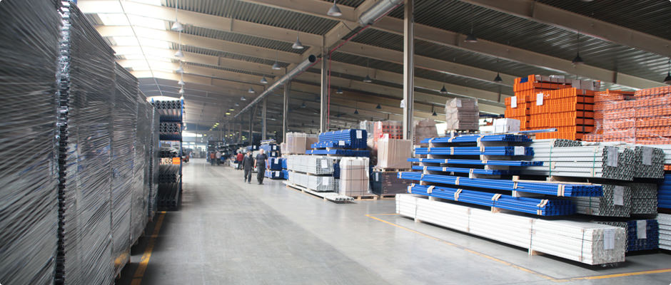
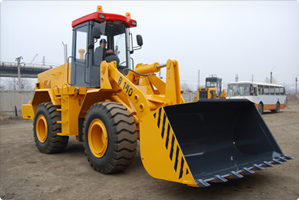

Это трёхслойная конструкция, состоящая из двух профилированных металлических окрашенных листов и теплоизоляционного наполнителя между ними. Теплоизоляционный слой в стеновых сэндвич-панелях купить которые вы можете у завода «Лиссант», продаваемый двух видов: пенополиуретан или пенополиизоцианурат. Оба вида утеплителя абсолютно безвредны для человека и окружающей среды. Пенополиуретан - самый распространенный в мире наполнитель для сэндвич-панелей пвх, обладающий великолепными теплоизоляционными характеристиками, долговечностью и лёгким весом. Пенополиизоцианурат - разновидность пенополиуретана со специальными добавками, повышающими огнестойкость.
Подзаголовок раздела новости или статьи
Внешнее покрытие этих панелей ппу выполнено из стали с полимерным покрытием, которое устойчиво к коррозии, агрессивным средам, ультрафиолету и механическому воздействию. При прозводстве панелей мы используем холоднокатанную горячеоцинкованную сталь толщиной 0.4 - 0.5 мм производства НЛМК, ММК, Северсталь, ArcelorMittal, Ruukki с различными видами полимерных покрытий. Если необходимо особое покрытие, пример ссылки в тексте сэндвич-панелей ховер для ссылки особенностей технологического или температурного режима, специалисты нашей компании помогут подобрать такое, которое будет полностью соответствовать специальным техническим требованиям...
Пример картинок в тексте
- Магазин
-
Склад
- Оптовый
- Розничный
- Какой-нибудь ещё
- Филиал
Пример ненумерованного списка
- Магазин
-
Склад
- Оптовый
- Розничный
- Какой-нибудь ещё
- Филиал
Пример картинок в тексте
Внешнее покрытие этих панелей ппу выполнено из стали с полимерным покрытием, которое устойчиво к коррозии, агрессивным средам, ультрафиолету и механическому воздействию. При прозводстве панелей мы используем холоднокатанную горячеоцинкованную сталь толщиной 0.4 - 0.5 мм производства НЛМК, ММК, Северсталь, ArcelorMittal, Ruukki с различными видами полимерных покрытий. Внешнее покрытие этих панелей ппу выполнено из стали с полимерным покрытием, которое устойчиво к коррозии, агрессивным средам, ультрафиолету и механическому воздействию. При прозводстве панелей мы используем холоднокатанную горячеоцинкованную сталь толщиной 0.4 - 0.5 мм производства НЛМК, ММК, Северсталь, ArcelorMittal, Ruukki с различными видами полимерных покрытий. При прозводстве панелей мы используем холоднокатанную горячеоцинкованную сталь толщиной 0.4 - 0.5 мм производства НЛМК, ММК, Северсталь, ArcelorMittal, Ruukki с различными видами полимерных покрытий. Внешнее покрытие этих панелей ппу выполнено из стали с полимерным покрытием, которое устойчиво к коррозии, агрессивным средам, ультрафиолету и механическому воздействию. При прозводстве панелей мы используем холоднокатанную горячеоцинкованную сталь толщиной 0.4 - 0.5 мм производства НЛМК, ММК, Северсталь, ArcelorMittal, Ruukki с различными видами полимерных покрытий. Внешнее покрытие этих панелей ппу выполнено из стали с полимерным покрытием, которое устойчиво к коррозии, агрессивным средам, ультрафиолету и механическому воздействию. При прозводстве панелей мы используем холоднокатанную горячеоцинкованную сталь толщиной 0.4 - 0.5 мм производства НЛМК, ММК, Северсталь, ArcelorMittal, Ruukki с различными видами полимерных покрытий. При прозводстве панелей мы используем холоднокатанную горячеоцинкованную сталь толщиной 0.4 - 0.5 мм производства НЛМК, ММК, Северсталь, ArcelorMittal, Ruukki с различными видами полимерных покрытий.
Внешнее покрытие этих панелей ппу выполнено из стали с полимерным покрытием, которое устойчиво к коррозии, агрессивным средам, ультрафиолету и механическому воздействию. При прозводстве панелей мы используем холоднокатанную горячеоцинкованную сталь толщиной 0.4 - 0.5 мм производства НЛМК, ММК, Северсталь, ArcelorMittal, Ruukki с различными видами полимерных покрытий. Внешнее покрытие этих панелей ппу выполнено из стали с полимерным покрытием, которое устойчиво к коррозии, агрессивным средам, ультрафиолету и механическому воздействию. При прозводстве панелей мы используем холоднокатанную горячеоцинкованную сталь толщиной 0.4 - 0.5 мм производства НЛМК, ММК, Северсталь, ArcelorMittal, Ruukki с различными видами полимерных покрытий. При прозводстве панелей мы используем холоднокатанную горячеоцинкованную сталь толщиной 0.4 - 0.5 мм производства НЛМК, ММК, Северсталь, ArcelorMittal, Ruukki с различными видами полимерных покрытий.
Внешнее покрытие этих панелей ппу выполнено из стали с полимерным покрытием, которое устойчиво к коррозии, агрессивным средам, ультрафиолету и механическому воздействию. При прозводстве панелей мы используем холоднокатанную горячеоцинкованную сталь толщиной 0.4 - 0.5 мм производства НЛМК, ММК, Северсталь, ArcelorMittal, Ruukki с различными видами полимерных покрытий. Внешнее покрытие этих панелей ппу выполнено из стали с полимерным покрытием, которое устойчиво к коррозии, агрессивным средам, ультрафиолету и механическому воздействию. При прозводстве панелей мы используем холоднокатанную горячеоцинкованную сталь толщиной 0.4 - 0.5 мм производства НЛМК, ММК, Северсталь, ArcelorMittal, Ruukki с различными видами полимерных покрытий. При прозводстве панелей мы используем холоднокатанную горячеоцинкованную сталь толщиной 0.4 - 0.5 мм производства НЛМК, ММК, Северсталь, ArcelorMittal, Ruukki с различными видами полимерных покрытий.
Пример таблицы
| Артикул | Название модели панелей | Толщина | Теплопроводность | Стабильность размеров | Удельный вес | Температурный диапазон |
|---|---|---|---|---|---|---|
| P 32109 | PIrro Universal | 24 мм | 0,023 Вт/(м•К) | 7 % | 32 ± 2 кг/м3 | от -70°C до +120°C |
| P 31187 | Pirro Venti | 18 мм | 0,042 Вт/(м•К) | 6 % | 31 ± 2 кг/м3 | от -50°C до +140°C |
| P 19210 | Pirro Plaster | 21 мм | 0,021 Вт/(м•К) | 7% | 34 ± 3 кг/м3 | от -70°C до +120°C |
| P 34114 | Pirro Agrico | 20 мм | 0,018 Вт/(м•К) | 2% | 29 ± 1 кг/м3 | от -70°C до +120°C |
Пример текста в две колонки
Внешнее покрытие этих панелей ппу выполнено из стали с полимерным покрытием, которое устойчиво к коррозии, агрессивным средам, ультрафиолету и механическому воздействию. При прозводстве панелей мы используем холоднокатанную горячеоцинкованную сталь толщиной 0.4 - 0.5 мм производства НЛМК, ММК, Северсталь, ArcelorMittal, Ruukki с различными видами полимерных покрытий. Внешнее покрытие этих панелей ппу выполнено из стали с полимерным покрытием, которое устойчиво к коррозии, агрессивным средам, ультрафиолету и механическому воздействию.
При прозводстве панелей мы используем холоднокатанную горячеоцинкованную сталь толщиной 0.4 - 0.5 мм производства НЛМК, ММК, Северсталь, ArcelorMittal, Ruukki с различными видами полимерных покрытий. Внешнее покрытие этих панелей ппу выполнено из стали с полимерным покрытием, которое устойчиво к коррозии, агрессивным средам, ультрафиолету и механическому воздействию. При прозводстве панелей мы используем холоднокатанную горячеоцинкованную сталь толщиной 0.4 - 0.5 мм производства НЛМК, ММК, Северсталь, ArcelorMittal, Ruukki с различными видами полимерных покрытий.